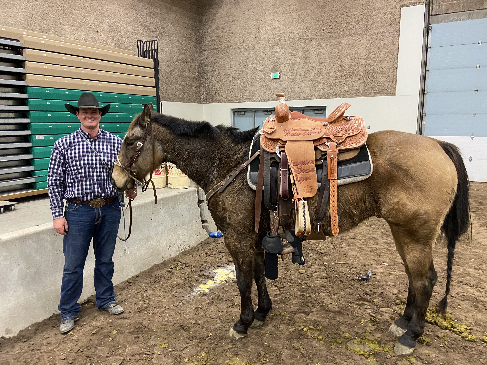
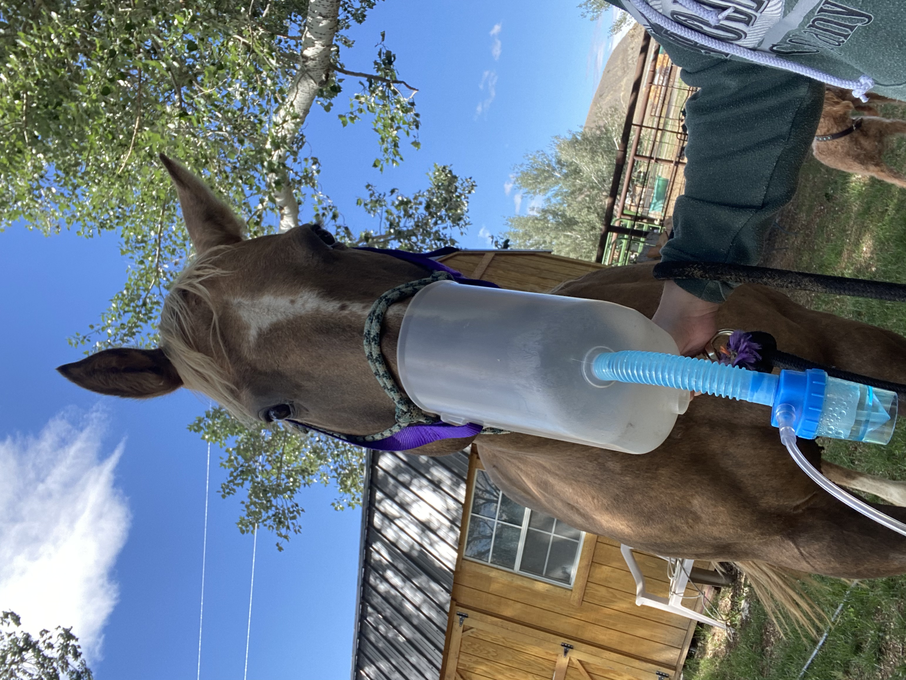

My horse has never felt as good as he did after Kooper worked on him. He was severly out in his neck and pelvis.
Kooper was able to put them back in for him so he could move the correct way. I was able to compete on him at the Pro Rodeo Finals
where we won the calf roping. ~Bryce B.

My horse has struggled with a cough after she was sick this winter. Kooper gave her a series of five breathing treatments
that cleared up her cough. I am able to ride her without any sign of a cough of shortness of breath. ~Katie B.
